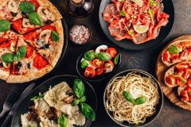
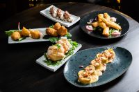
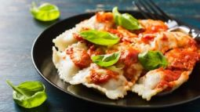

Servicios de Menú

Menú del día
Es uno de los menús más recurrido del restaurant y tiene una gran demanda. Ofrece una amplia variedad de platos económicos. Así pues, tiene muy buena relación calidad-precio.

Menú gastronónico
Compuesto por alimentos y platos de una zona específica o elaborado a partir de un ingrediente base/principal. Este menú tiene tiene como funcionalidad, homenajear la cocina autóctona que, al mismo tiempo, es un gran reclamo para los turistas.

Menú degustación
Selección de los mejores platos (platos estrella) que se encuentran en la carta, para que los comensales puedan disfrutar de una exquisita experiencia o incluso algunas nuevas propuestas/innovación del chef